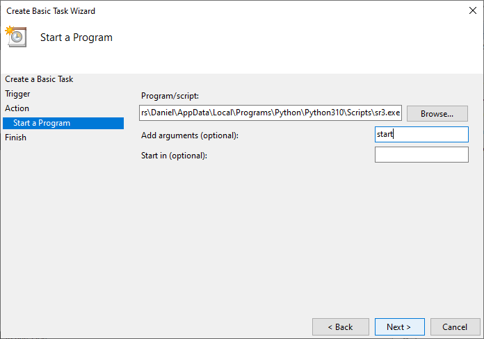

Manuel de l’utilisateur Windows
Ce document enseigne aux utilisateurs novices de Python sur Windows comment ils pourraient facilement exécuter Sarracenia de différentes manières. Les captures d’écran ont été prises à partir de l’édition Windows Server 2012 R2 Standard. N’hésitez pas à créer des issues si vous croyez que ce document pourrait être enrichi d’un (ou de plusieurs) cas important(s).
Exécution de Sarracenia avec une invite de commandes
À partir d’une session Windows Powershell :
Lancez une session Powershell  et tapez cette commande à l’invite
et tapez cette commande à l’invite
sr3 restart
Cela démarrera les processus Sarracenia comme indiqué par vos configurations et affichera les informations de journalisation

Gardez cette session Powershell en vie jusqu’à ce que vous ayez terminé avec Sarracenia. Pour arrêter Sarracenia, vous pouvez taper:
sr3 stop
Cela arrêtera tous les processus Sarracenia proprement, comme le ferait un redémarrage. La fermeture de cette fenêtre tuera également tous les processus.
À partir de l’invite Anaconda :
Exécutez cette commande
activate sr3 && s3r restart
Exécution de Sarracenia sans invite de commandes
Voici un cas où quelqu’un (comme un administrateur de système) doit exécuter Sarracenia sans invite de commande et s’assurer que le système démarre au démarrage de Windows. La façon évidente de le faire serait à partir du Planificateur de tâches.
À partir du Planificateur de tâches :
Ouvrez le Planificateur de tâches :

Sélectionnez Créer une tâche de base… dans le panneau d’action à droite :

Cela lancera l’assistant de création de tâche de base où vous …
Remplissez le nom :

Choisissez le déclencheur :

Choisissez l’action :

Définissez l’action :
Passez en revue la tâche et choisissez Terminer :

Ouvrez la boîte de dialogue propriétés et choisissez Exécuter, que l’utilisateur soit connecté ou non et Exécuter avec les privilèges les plus élevés :
La tâche doit maintenant apparaître dans votre Bibliothèque du Planificateur de tâches avec l’état Prêt.
Ensuite, vous pouvez l’exécuter immédiatement avec le bouton  .
.